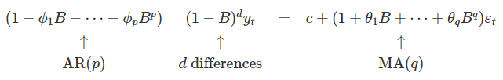
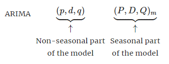

Task 4: ARIMA
In addition to time series regression models and exponential smoothing, ARIMA provides another approach to time series forecasting.
The main objective of ARIMA models is to describe the autorrelations in the data, while exponential smoothing aim to describe the trend and seasonality in the data.
Depending on how statistical properties vary over the time, series can be stationary (not depend on time observed) or non-sationary (those with trends or with seasonality).
In general, a stationary time series will have no predictable patterns in the long-term since we cannot be sure where the peaks and troughs of the cycles will be.
Are covid series stationary?
For covid outbreaks, and according to what we have seen in the visual section, the cycles seems aperiodic. They could be caused when the level of infections is out of control and the containment policies in place are not sufficient. Then the implementation of additional policies against the spread of the virus allows the level of infection to decrease again.
ACF plots are useful for identifying what kind of time series we are facing. For a stationary time series, the ACF will drop to zero relatively quickly, while the ACF of non-stationary data decreases slowly. ACF is an (complete) auto-correlation function which gives us values of auto-correlation of any series with its lagged values while PACF is a partial auto-correlation function. Basically instead of finding correlations of present with lags like ACF, it finds correlation of the residuals (which remains after removing the effects which are already explained by the earlier lag(s)) with the next lag value hence ‘partial’ and not ‘complete’ as we remove already found variations before we find the next correlation.
On the other hand, STL is a versatile and robust method for decomposing time series that we will apply in one of the sections.
Non seasonal ARIMA
Non seasonal ARIMA models are a combination of:
Autoregressive models (AR) which forecast the variable of interest using a linear combination of predictors.
Moving average models (MA) which forecast the variable of interest by using past values.
Reverse of differencing (I)

Seasonal ARIMA
Seasonal ARIMA models includes additional seasonal terms similar to the non-seasonal.

Dynamic regression models
Up to this point the models showed do not allow the inclusion of information from other information sources which may be relevant. However, ARIMA models can be extended in order to allow other information to be included.
For doing that, we will allow the errors from a regression to contain autocorrelation. The error series will be assumed to follow an ARIMA model.